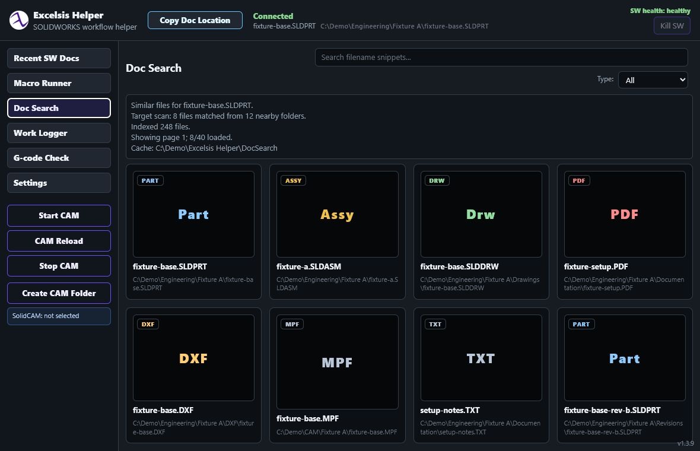
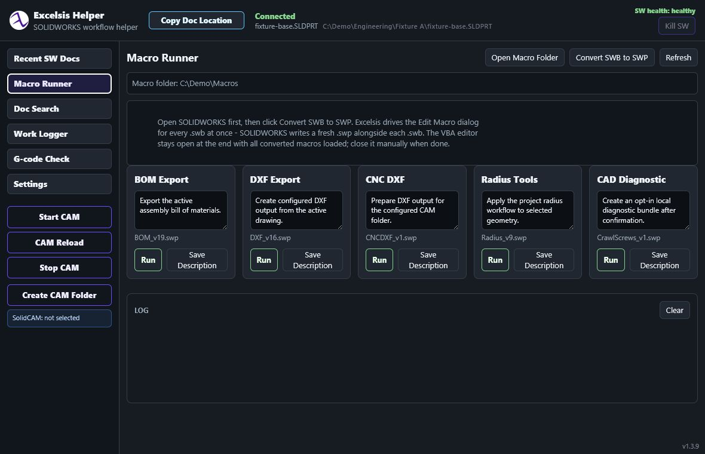

Practical CAD first
Sketch, extrude, cut, fillet, constraints, and dependable regeneration remain the foundation before more ambitious AI workflows.
Open-source Windows workflow companion
A focused desktop toolkit for repetitive SOLIDWORKS document, macro, search, and shop-floor workflows. The new standalone repository keeps Helper independent from ExcelsisView.
Support continued open development, testing, and documentation.
Support the workCurrent release · 1.4.8-public.1
Version 1.4.8-public.1 passed licensing, corresponding-source, packaged-byte, dependency, security, privacy, and provenance gates against the exact release candidate. It adds the finalized seven-macro bundle and the current local machining and Work Logger workflow improvements.
Windows notice: the installer is unsigned and may trigger SmartScreen. Kaspersky 21.26 found zero detections or suspicions in the exact release; Defender was disabled on the build host. Verify the published SHA-256 before running it.
Purpose-built automation
Excelsis Helper brings recent-document access, searchable document discovery, macro launching, and related workflow tools into one local Windows application.


Clear workflow surfaces
The project favors visible actions, readable descriptions, and bounded local processing. Public releases include exact source, dependency notices, checksums, and a documented security review.
Excelsis3D plans · dev help wanted
The longer-term goal is to turn images, prompts, dimensions, thread sizes, bounding boxes, and other constraints into editable parametric CAD features. The current direction explores an open CAD engine and a feature architecture that remains understandable to both people and coding agents.
Sketch, extrude, cut, fillet, constraints, and dependable regeneration remain the foundation before more ambitious AI workflows.
The proposed architecture separates visible evaluated geometry from persistent engineering references so downstream features can survive topology changes more reliably.
CAD developers, UI contributors, testers, technical writers, manufacturing users, and AI-coding experimenters are welcome. Future directions include assemblies, CAM, FEM, semantic feature graphs, and resilient model regeneration.
Support and development
Report reproducible problems, propose documentation improvements, test future releases, or discuss implementation work through the repository. Please do not upload confidential customer or CAD files to public issues.
Contact
For collaboration, development, or general inquiries, email simonsystem609@gmail.com.
For bug reports, please use GitHub Issues; it is the preferred channel for reproducible problems. Do not email credentials or confidential files.